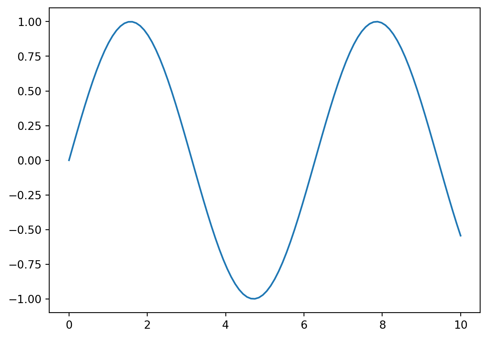
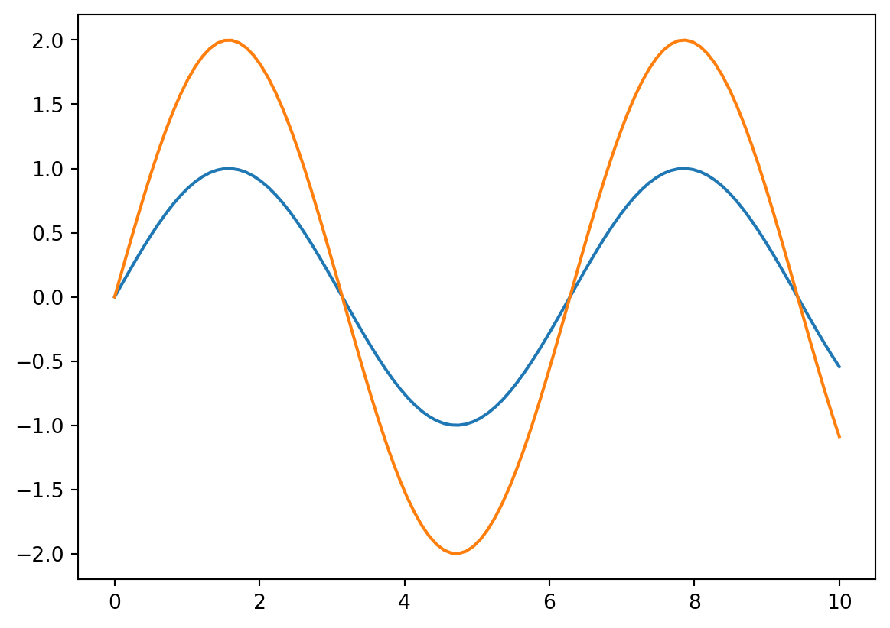
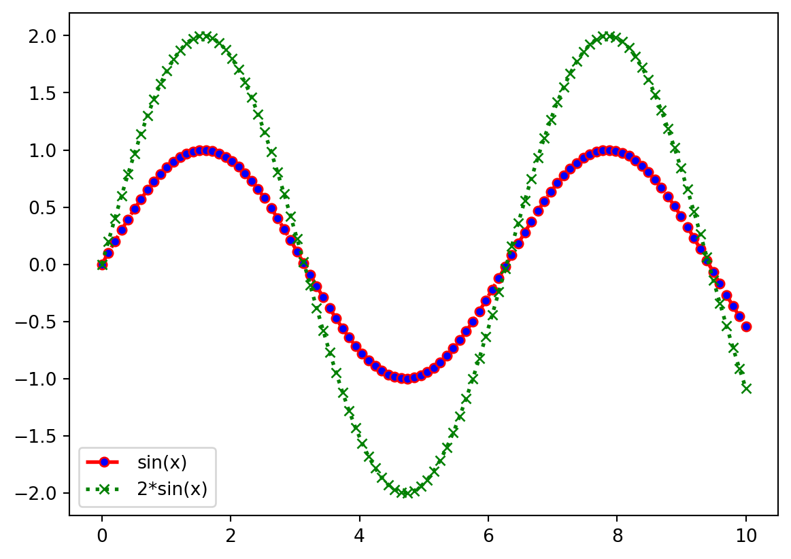
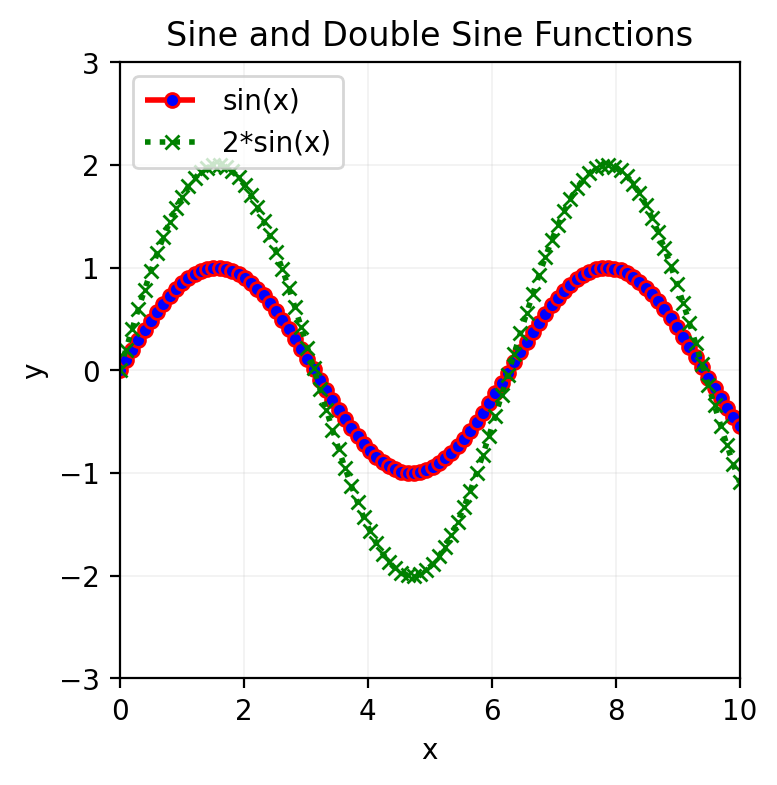
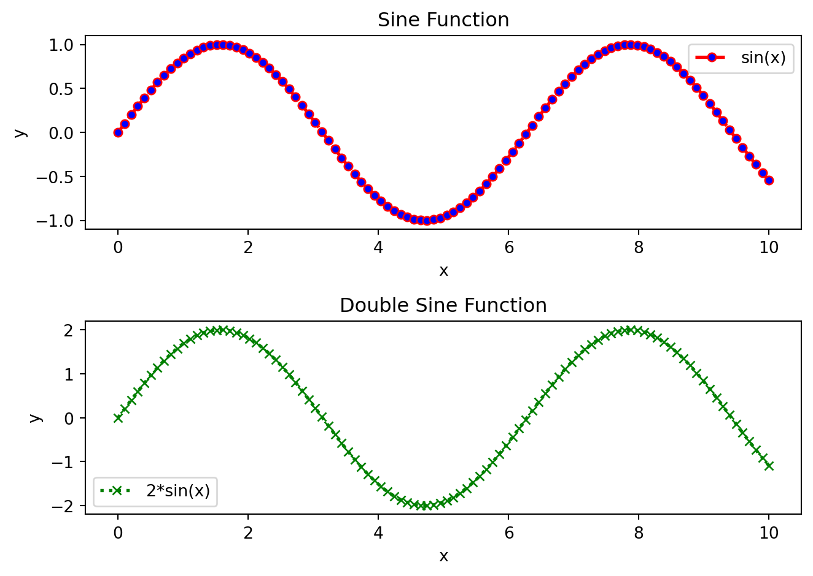
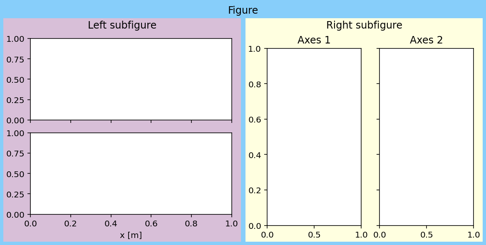

Basic Data Visualization Techniques
Basic Data Visualization Technique
The most popular data visualization libraries in Python is Matplotlib. Let`s start with the basic data visualization techniques using Matplotlib.
1. Generate some x-y data points.
2. Plot the data points.
To add more graphs to the same figure, use plt.plot() multiple times before plt.show(). If you want to create a new figure, use plt.figure() before plt.plot().


3. Adjust the plot.
The plot() function takes the following arguments:
- x-axis data points
- y-axis data points
- color: hex, or color name (e.g., ‘red’, ‘blue’,‘black’), abbreviated (e.g., ‘r’, ‘b’,‘k’)
- linestyle: ‘-’, ‘–’, ‘-.’, ‘:’ or “solid”, “dashed”, “dashdot”, “dotted”
- marker: ‘o’, ‘x’, ‘+’, ’*‘, ’s’, ‘d’, ‘^’, ‘v’, ‘>’, ‘<’, ‘p’, ‘h’
- linewidth - width of the line
- alpha - transparency of the line
- markerfacecolor - color of the marker face
- markersize - size of the marker
- label - label for the data points
You have to call plt.legend() to show the labels.

4. Adust the figure
This plot figure can be adjusted by changing the figure size, title, labels, and so on.
plt.xlabel(): Set the x-axis label of the current axis.plt.ylabel(): Set the y-axis label of the current axis.plt.title(): Set a title for the axes.plt.legend(): Place a legend on the axes.plt.grid(): Configure the grid lines.plt.xlim(): Get or set the x-limits of the current axes.plt.ylim(): Get or set the y-limits of the current axes.plt.xticks(): Get or set the current tick locations and labels of the x-axis.plt.yticks(): Get or set the current tick locations and labels of the y-axis.plt.figure(): Create a new figure.plt.show(): Display a figure.

Creating multiple plots
You can create multiple plots in the same figure by using the subplot() function.

Text(0.5, 0.98, 'Right subfigure')
Let`s try to create 4x3 subplots with specific adjustments.
plt.subplots(4, 3): create 4x3 subplotsfigsize=(3, 4): set the figure size to 3x4 inchessharex=True: all subplots share the x-axissharey=True: all subplots share the y-axisconstraint_layout=True: automatically adjust the subplot parameters to give the specified padding around the subplotsgridspec_kw={'hspace': 0.5, 'wspace': 0.5}: set the horizontal and vertical space between the subplots to 0.5 inches
Play with the code below to understand the different parameters:
viewof figx = Inputs.range(
[1, 10],
{value: 5, step: 0.5, label: "Figure x-size:"}
)
viewof figy = Inputs.range(
[1, 10],
{value: 5, step: 0.5, label: "Figure y-size:"}
)
viewof constrained = Inputs.select(["True", "False"], {label: "Select an option:"})
viewof dpi = Inputs.range(
[70, 100],
{value:75, step:5 , label: "Dpi:"}
)
viewof space_h = Inputs.range(
[0.1, 1],
{value: 0.5, step: 0.05, label: "horizonatal space:"}
)
viewof space_w = Inputs.range(
[0.1, 1],
{value: 0.5, step: 0.05, label: "width space:"}
)#| edit: False
#| runbutton: True
#| input:
#| - figx
#| - figy
#| - constrained
#| - dpi
#| - space_w
#| - space_h
import matplotlib.pyplot as plt
import numpy as np
x = np.linspace(0, 10, 100)
y = np.sin(x)
fig, ax = plt.subplots(3,2, figsize=(figx,figy), dpi=dpi, sharex=True, sharey=True, constrained_layout=constrained,gridspec_kw={'hspace': space_h, 'wspace': space_w})
for i in range(3):
for j in range(2):
ax[i,j].plot(x, y*(i+1)*(j+1))
plt.show()